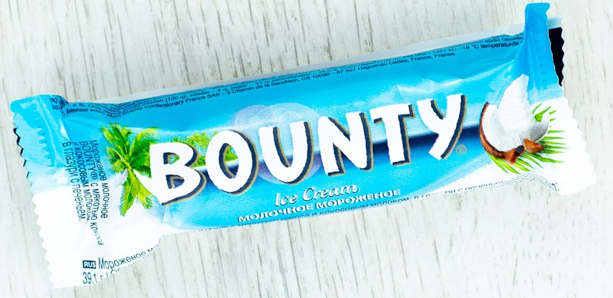
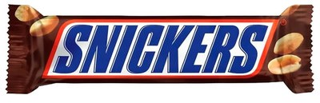
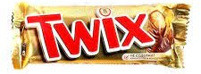
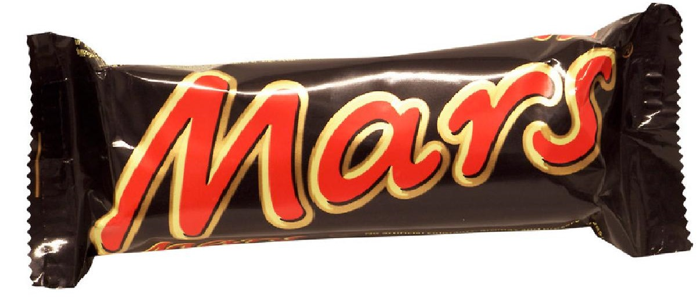
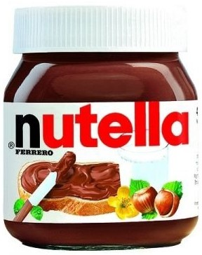

| № | Название | Фото | Описание | Цена |
|---|---|---|---|---|
| 1 | Bounty |  | Bounty («Баунти»; англ. bounty — «щедрость») — конфета с мякотью кокоса, покрытая молочным шоколадом, выпускаемая американской компанией Mars в странах Европы, Океании и Ближнего Востока. | 750$ |
| 2 | Snicers |  | Snickers (по-русски «Сни́керс»; от англ. Snickers [snɪkərz], от клички лошади семьи Марс) — марка шоколадных батончиков с жареным арахисом (также с семечками, фундуком, миндалём), карамелью и нугой, покрытых сверху молочным шоколадом. Продажи Snickers в 2005 году по всему миру ежегодно составляли около 2 миллиардов долларов. В Великобритании, на Острове Мэн и в Ирландии до 1990 года продукт продавался под названием Marathon. Позже этот батончик стал продаваться по всему миру под названием Snickers. Популярен в странах бывшего социалистического лагеря. | 700$ |
| 3 | Twix |  | Twix (в некоторых странах — Raider) — шоколадный батончик, песочное печенье с карамелью, покрытое слоем молочного шоколада, производимый американской компанией Mars Incorporated с 1967 года. Упаковка Twix обычно состоит из двух батончиков. | 1000$ |
| 4 | Mars |  | Mars (по-русски «Марс») — шоколадный батончик, производимый американской компанией Mars Incorporated. Впервые был изготовлен в 1932 году в Слау (Великобритания) американским предпринимателем Форрестом Марсом. Рецепт изготовления батончика не изменился и до сегодняшнего дня, но его размер и пропорции основных ингредиентов менялись год за годом | 800$ |
| 5 | Nutella |  | Nutella (Нуте́лла) — зарегистрированный товарный знак джандуйи — пьемонтской шоколадной пасты, или сладкого спреда с лесными орехами, какао и молоком. Выпускается итальянской компанией Ferrero S.p.A. с 1964 года. | 1000000$ |